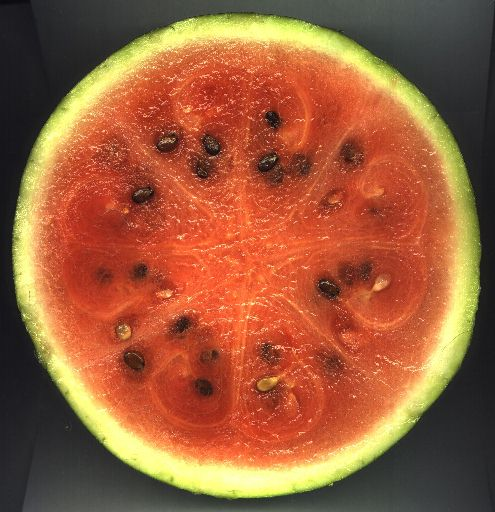
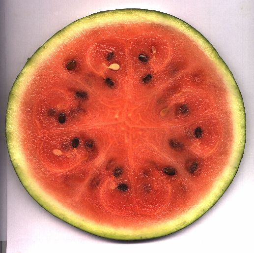
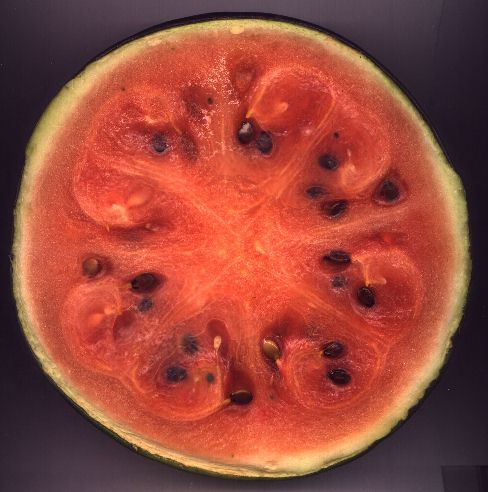

im Querschnitt

Bild in groß

Bild in groß
Nach dem Aufschneiden 14 Tage lang
im Kühlschrank auf einem Teller gelagert, mit Schnittfläche
nach unten. Eine davon abgeschnittene (1cm breite) Scheibe lag
noch darunter, die sehr naß war und keine erhöhten
Strukturen hatte.

Bild in groß
Die Fotos der 'alten' Melone auf
dem Küchentisch zeigen die erhöhten Strukturen noch
besser.
(innerhalb dieser Wirbelstrukturen konnte also
das Wasser besser behalten werden.
Sie dehydrieren zuletzt, wie bei uns das Gehirn) :